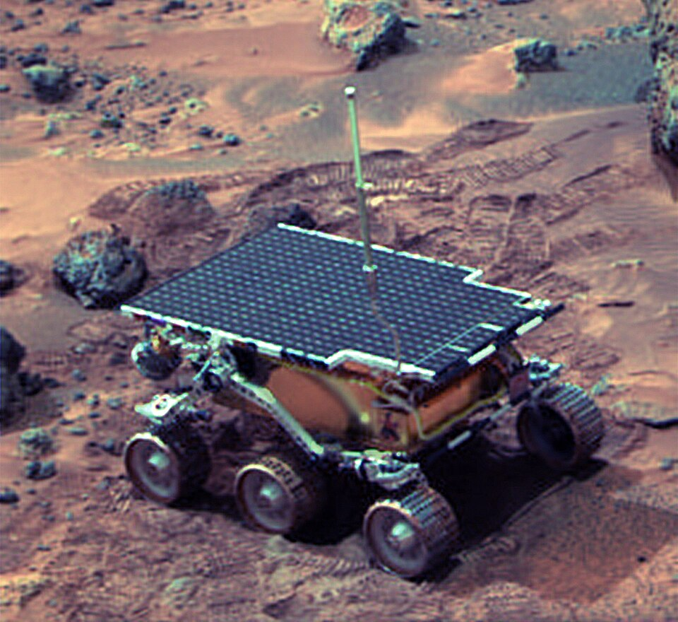
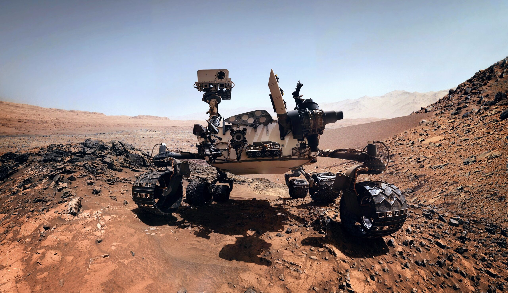
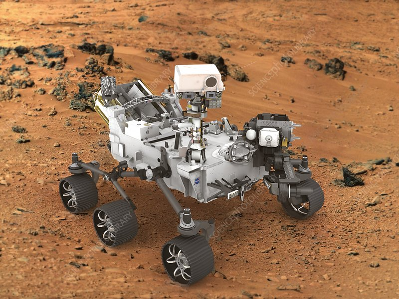

Mission History
1997 - Sojourner
Mission Goals: Demonstrate the feasibility of low-cost landings on Mars.
Overview: Sojourner was part of the Mars Pathfinder mission and served as the first successful Mars rover, exploring the Martian surface for 83 days.
Launch: December 4, 1996 | Landing: July 4, 1997
Major Discoveries: Confirmed the presence of rocks and soil types, indicating that Mars once had a wetter climate.
Key Technical Features: Solar-powered, six-wheel rocker-bogie suspension system, on-board camera for surface imaging.
2004 - Spirit and Opportunity

Mission Goals: Explore Martian geology and search for signs of water.
Overview: Twin rovers designed to traverse the Martian surface, analyze rocks, and study the planet’s history.
Launch: Spirit: June 10, 2003 | Opportunity: July 7, 2003 | Landing: January 2004
Major Discoveries: Found evidence of past water activity in Martian rocks and soil, including "blueberry" hematite spheres.
Key Technical Features: Solar-powered, advanced spectrometers, panoramic cameras, six-wheel rocker-bogie suspension.
2012 - Curiosity
Mission Goals: Assess Mars' habitability for microbial life.
Overview: Curiosity is a nuclear-powered rover designed for advanced surface analysis, exploring Gale Crater.
Launch: November 26, 2011 | Landing: August 6, 2012
Major Discoveries: Discovered complex organic molecules, methane gas fluctuations, and evidence of ancient freshwater lakes.
Key Technical Features: Nuclear-powered (MMRTG), ChemCam laser spectrometer, robotic arm, Mars Hand Lens Imager (MAHLI).
2021 - Perseverance
Mission Goals: Search for signs of ancient life, collect rock samples.
Overview: Perseverance is the most advanced rover, equipped with sophisticated instruments to study Mars' surface and collect samples for future return.
Launch: July 30, 2020 | Landing: February 18, 2021
Major Discoveries: Discovered diverse rock types in Jezero Crater, successfully collected Martian rock samples.
Key Technical Features: Nuclear-powered (MMRTG), SuperCam for remote analysis, SHERLOC for organic detection, Ingenuity helicopter for aerial exploration.